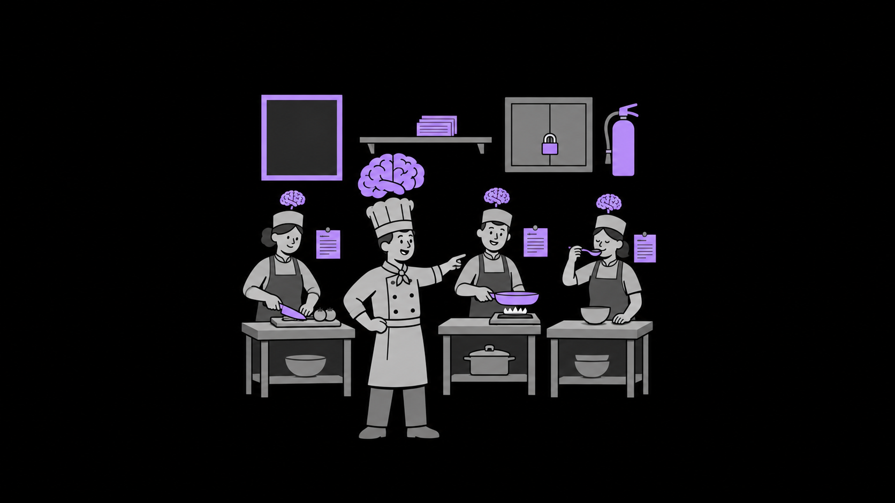

a cabeça de cada um; pode ser diferente
as regras da cozinha, na parede
Skills na prateleira: todas as receitas disponíveis
na bancada: só a ficha do prato da vez
o chef coordena a brigada
08
VESPASCon 2026